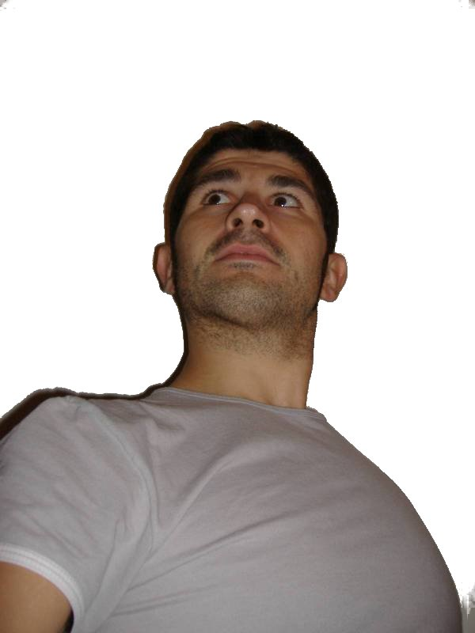

![[up]](../../img/1uparrow.png) up
up
|  |
Data e luogo di nascita: 04/09/1977, Ferrara.
Cittadinanza: italiana.
Patenti: A e B.
Servizio militare: dispensato per meriti scientifici
Attualmente collaboro con il Gruppo di Astrofisica delle Alte Energiepresso il Dipartimento di Fisica dell'Università di Ferrara.
Le mie mansioni sono:
Date and place of birth: 04 September 1977, Ferrara.
Nationality: Italian.
Driving licenses: A & B (motorcycles and cars).
At present I am working with the High-Energy
Astrophysics Group at the Ferrara
University Physics Department.
The activities I am involved with are:
2005: Dottorato di Ricerca in Fisica,
conseguito presso la facoltà di Scienze MM.FF.NN.dell'Università
degli Studi di Ferrara.
Titolo della tesi:
"Hard X-ray optics development: feasibility study of a Laue Lens".
Giudizio: ottimo.
2001: Laurea in Fisica, indirizzo
Fisica della Materia, conseguita presso la
facoltà di Scienze MM.FF.NN.dell'Università degli
Studi di Ferrara. Titolo della tesi: "Interazioni magnetiche nei
sistemi granulari metallici". Voto: 110/110 e
lode.
1996: Maturità Scientifica
conseguito presso il Liceo Scientifico "A. Roiti" di Ferrara.
Voto: 60/60.
2005:
PhD in Physics, obtained at the Ferrara
University, Italy. Title of the thesis:
"Hard X-ray optics development: feasibility study of a Laue Lens".
2001: Degree "Laurea" in Physics,
specialization Solid State Physics, obtained at the Ferrara
University, Italy. Title of the thesis: "Magnetic interactions
in metallic granular systems". Marks: 110/110 cum
laude.
1996: High School-leaving examination
passed at the Scientific Liceo "A. Roiti" of Ferrara. Marks:
60/60.
01 Marzo - 31 Marzo 2005:
Co.co.co per lo sviluppo di software per il Dipartimento di Fisica
dell'Università di Ferrara.
Dicembre 2002 - Novembre 2004 titolare di assegno di
ricerca dal titolo "Sviluppo di ottiche per raggi X duri/gamma
molli", presso il Dipartimento di Fisica dell'Università
degli studi di Ferrara.
Dal Marzo 2002 impegnato nel dottorato di
ricerca in Fisica presso l'Università degli studi di
Ferrara.
Settembre - Dicembre 2001: Borsa di
studio finanziata da INFM (Istituto Nazionale di Fisica della
Materia) per la ricerca nel campo della "Isteresi magnetica di film
granulari metallici", presso l'unità di ricerca di Ferrara,
che ha condotto all'elaborazione di un modello teorico per la
descrizione di sistemi granulari dal punto di vista magnetico.
(4mesi, tempo pieno)
Settembre 2000: Partecipazione ad un
esperimento di caratterizzazione strutturale tramite tecnica
GISAXS (Grazing Incidence Small Angle X-ray Scattering)
presso il sincrotrone di Grenoble (Francia).
March 2005: One month contract with the Ferrara
University Physics Department for software development.
December 2002 - Today: Owner of
grant for the research about the "Development of
focalizing optics for hard X-rays and soft gamma rays".
March 2002 - Today: PhD student
at the Department of Physics of the Ferrara University.
September - December 2001: Grant from
INFM (National Institute of Matter Physics) for the research on the
"Magnetic Hysteresis of metallic granular films", in collaboration
with the INFM group of Ferrara.
September 2000: Participation in a
structural characterization experiment using the GISAXS
(Grazing Incidence Small Angle X-ray Scattering) technique at
ESRF(European Synchrothron Radiation Facility), Grenoble
(France).
Sono autore di numerose pubblicazioni scientifiche nel campo delle ottiche focalizzanti per raggi X. [link]
I am author of several scientifc publication in the field of focusing optics for X-ray. [link]
Giugno 2005 - Oggi: Prestazioni occasionali come docente presso l'associazione
"Studium".
07/04/2001 - 15/06/2001: Docente di
Fisica a tempo determinato presso l'Istituto Tecnico Industriale
"F. Viola" di Rovigo.
Tecnico di Laboratorio di Fisica e Chimica
presso il Liceo Classico
"L. Ariosto" di Ferrara per l'anno scolastico 1999-2000 (2 ore settimanali).
Attività di tutorato presso il Dipartimento di Fisica
dell'Università di Ferrara nell'anno accademico
1999-2000.
Servizio 150 ore presso l'Archivio Generale e Storico
dell'Università di Ferrara negli anni 1998 e
1999.
June 2005 - Today: Collaboration as a teacher with the association
"Studium".
07 April 2001 - 15 June 2001:
Physics teacher at the High School "F. Viola" in Rovigo
(Italy).
1999-2000: Laboratory technician at
the High School "L. Ariosto" in Ferrara (2 hours per week).
Academic year 1999-2000: Tutor at the
Physics Department of Ferrara University.
1998 & 1999: Employed at the General and
Historical Archive of the Ferrara University (150 hours per year,
scholarship).
PR per il Dipartimento di Fisica dell'Università di Ferrara nel corso delle manifestazioni rivolte al pubblico "Bussola" (2000), "Porte Aperte" (2000-2003) e "Salone dello studente" (2000 e 2001).
PR for the Department of Physics in the manifestations open for the public "Bussola" (2000), "Porte Aperte" (2000-2004) "Salone dello studente" (2000 e 2001).
16-22 Maggio 2004 - Scuola nazionale di astrofisica.
("Lensing gravitazionale - Meccanica celeste e fenomeni
caotici")
27 Settembre-3 Ottobre 2003 - Scuola nazionale di
astrofisica ("Astrofisica del mezzo interstellare - Pulsars e
Oggetti collassati")
2-12 Luglio 2002 - Leonardo Summer School ("Mission
Concept and Payload Design in X- and Gamma-Ray
Astronomy")
16-22 May 2004 - Astrophysics National School (Italy).
("Gravitational lensing - Celestial mechanics and chaotic phenomena")
27 September-3 October 2003 - Astrophysics National School (Italy).
("Interstellar medium astrophysics - Pulsars and compact objects")
2-12 July 2002 - Leonardo Summer School ("Mission
Concept and Payload Design in X- and Gamma-Ray
Astronomy")
Buona conoscenza della lingua inglese parlata e scritta, esercitata in svariati viaggi di lavoro all'estero.
Good knowledge of written and spoken English.
Sistemi operativi Linux e Windows.
Microsoft Office con programmazione Visual Basic,
OpenOffice.org, programmi per elaborazione di
immagini (Corel Draw, GIMP), conoscenza ed uso quotidiano di
svariati software per Linux.
Linguaggi di programmazione e di scripting:
Python, Perl, LabVIEW, C, C++, Fortran 77, Visual Basic, rsi-IDL, Bash.
Linguaggi di markup: Latex e HTML.
Amministrazione di macchine Linux (Red Hat, Mandrake, Gentoo).
Sviluppo e gestione del sito web del
gruppo di astrofisica delle alte energie
di Ferrara e del sito personale.
Sviluppatore del software scientifico pyxcom.
Operating systems Linux and Windows.
Microsoft Office with Visual Basic,
OpenOffice.org, image manipulation software (Corel
Draw, GIMP), knowledge and daily use of several softwares for
Linux.
Programming and scripting languages:
Python, Perl, LabVIEW, C, C++, Fortran 77, Visual Basic, rsi-IDL, Bash.
Markup Languages: Latex and HTML.
Administration of Linux systems (Red Hat, Mandrake, Gentoo)
Webmaster of the
Ferrara High Energy Astrophysics Group website
and of my personal website.
Developer of the scientific software pyxcom.
Dal Settembre 2001 mi sono appassionato al sistema operativo Linux
e al software open-source, che uso praticamente ogni giorno
per realizzare
programmi di utilità scientifica.
Le mie letture spaziano dai romanzi classici dell '800 e '900 ai
saggi ai libri comici. Tra i miei romanzi preferiti "La nausea" di
Sartre e "L'idiota" di Dostoevskij.
Mi piace ascoltare musica rock, soprattutto di gruppi stranieri, in
particolar modo i Pink Floyd.
Sono appassionato di di diversi sport: settimanalmente
gioco a calcetto e saltuariamente mi dedico ad altri sport.
Ogni tanto mi diletto con il bricolage, anche se il tempo a
disposizione è poco. Mi piace costruire soprattutto
scatole.
Since September 2001 I am fond of Linux operating system and of
the open source software, that I use almost everyday to realize
scientific utilities.
My lectures vary from classical novels to essays and comic books.
Among my favourites books "Nausea" by Sartre and "The Idiot" by
Dostoevskij.
I like rock music, almost British groups, especially Pink
Floyd.
I am fond of a lot of sports: I weekly play soccer and sometimes
I approach other sports.
When possible I do some bricolage,
even if it is hard to find the time.
Boxes are my favourite thing to build.